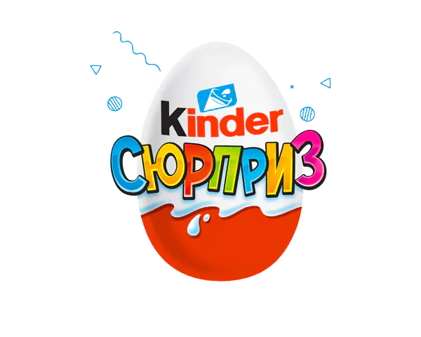
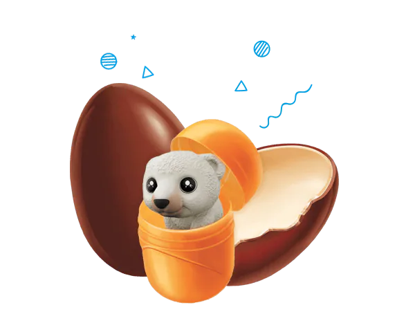
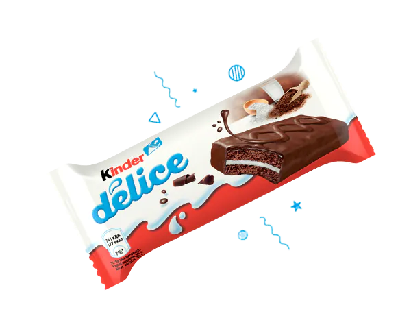
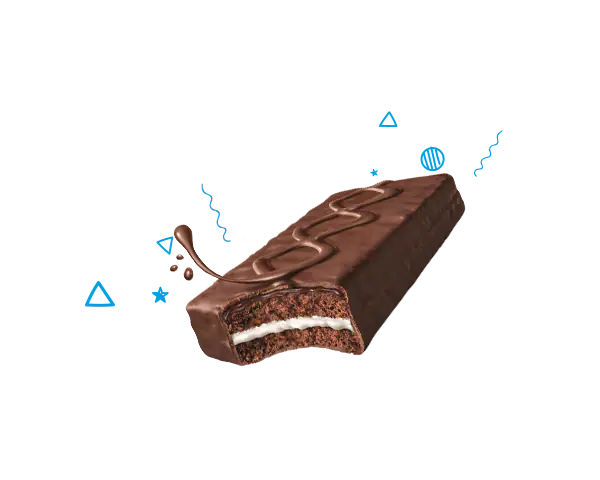

Kinder podderjivaet vas v vospitani schastlivyh detey, predlaja unikalnye produkty va sozdavaya radostnye momenty, kotorye emas zabyvayutsya. Eto vajnaya sostavlyayuschaya v razvitii detey, kotoraya vsegda byla chastyu nashey tarixiy
Kinder syurpriz seriyasi






Murakkab Oziqlanish qiymati
Sut ingrediyentlarining yuqori miqdori (32%) bo'lgan noyob formula bolalar uchun maxsus ishlab chiqilgan va har bir seriyadan o'zlarining sevimli qahramonlari bo'lgan o'yinchoqlar bolalar uchun xavfsiz bo'lgan materiallardan tayyorlangan.
Sutli shokolad (shakar, to'liq sut kukuni, kakao moyi, kakao massasi, emulsifikator: lesitinlar, xushbo'ylashtiruvchi), yog'siz sut kukuni, shakar, o'simlik yog'lari, sut yog'i, emulsifikator: lesitinlar, xushbo'ylashtiruvchi. O'yinchoqni o'z ichiga oladi.
Kinder.uz
kinder surpriz
Kinder surprizlar
Biz ijtimoiy tarmoqlardamiz